Introduction
Ce rapport accompagne le relevé d'audit effectué sur le site « cfl.lu ».
La méthodologie d'audit employée repose sur le référentiel RGAA 4.1, consultable à l'adresse suivante : https://accessibilite.public.lu/fr/rgaa4.1/criteres.html
L'audit a été réalisé au moyen de l'utilisation de navigateurs web et d'outils spécialisés. Des tests de restitution ont également été effectués conformément à la base de référence définie par le RGAA 4.1.
Échantillon
L'audit a porté sur un échantillon de 16 pages pour le niveau double A (AA) :
Environnement de test (base de référence)
Quelques critères RGAA, notamment ceux de la thématique JavaScript, incluent des tests de restitution à effectuer sur des technologies d'assistance associées à des navigateurs et des systèmes d'exploitation. Pour qu'un dispositif HTML / WAI-ARIA ou son alternative soit considéré comme compatible avec l'accessibilité, il faut qu'il soit pleinement fonctionnel, en termes de restitution et de fonctionnalités sur certaines combinaisons. Vous trouverez une explication détaillée de cet environnement de tests dans le document du RGAA 4.1.
Nous détaillons ci-dessous la base de référence utilisée pour réaliser les tests de restitution des composants du site.
Environnement de test – ordinateur
| Technologie d'assistance | Navigateur |
|---|---|
| NVDA 2022.2.4 | Firefox 105 |
| JAWS 2022 | Firefox 105 |
| VoiceOver (macOS Monterey version 12.6) | Safari 16 |
Environnement de test — mobile
| Système d'exploitation | Technologie d'assistance | Navigateur |
|---|---|---|
| Android 12 | TalkBack (dernière version) | Chrome 106 |
Accessibilité des pages auditées
Le site présente un niveau général d'accessibilité faible.
Le niveau de conformité relevé atteint 45,07 % de conformité sur l'ensemble des pages auditées, avec 39,62 % de conformité au niveau simple A (A) et 61,11 % de conformité au niveau double A (AA).
Le site est non conforme.
Conformité RGAA 4.1 du site
| Conforme | Non conforme | |
|---|---|---|
| A | 39,62 % | 60,38 % |
| AA (légal) | 45,07 % | 54,93 % |
Note sur le calcul de conformité
La conformité globale (Tableau « Conformité RGAA 4.1 ») est calculée de la manière suivante : C / (C+NC). C'est le nombre de critères conformes et NC le nombre de critères non conformes.
C'est ce nombre qui constitue la référence légale. Il représente le taux de conformité de l'échantillon.
Il est normal que le taux de conformité global diffère sensiblement du taux de conformité par page. En effet, un critère NC (non conforme) sur une page rend le critère non conforme sur l'ensemble de l'échantillon.
Pour qu'un site soit conforme (100 % des critères applicables sont conformes au niveau AA), il est nécessaire que le taux de conformité par page équivaille à 100 %.
Conformité pour chaque niveau
| Conforme | Non conforme | |
|---|---|---|
| A | 39,62 % | 60,38 % |
| AA | 61,11 % | 38,89 % |
Moyenne par pages
| Nº page | Titre de la page | %C |
|---|---|---|
| P01 | Accueil | 50,98 % |
| P02 | Contact | 72,73 % |
| P03 | Mentions légales | 69,23 % |
| P04 | Accessibilité des transports | 81,08 % |
| P05 | Plan du site | 96,67 % |
| P06 | Résultats de recherche | 69,70 % |
| P07 | Recherche horaire | 80,00 % |
| P08 | Formulaire de réclamation | 72,09 % |
| P09 | Infos chantiers | 82,86 % |
| P10 | Services clientèle | 90,63 % |
| P11 | Réserver et acheter national | 82,86 % |
| P12 | Forfaits évasion | 81,82 % |
| P13 | FAQ | 78,79 % |
| P14 | Actualité avec carrousel | 85,29 % |
| P15 | Actualité avec vidéo | 85,00 % |
| P16 | Détails évasion | 78,38 % |
Moyenne par thématiques
| Thématiques | C | NC |
|---|---|---|
| Images | 0 % | 100 % |
| Cadres | 50 % | 50 % |
| Couleurs | 0 % | 100 % |
| Multimédia | 60 % | 40 % |
| Tableaux | 0 % | 0 % |
| Liens | 50 % | 50 % |
| Script | 66,67 % | 33,33 % |
| Éléments obligatoires | 55,56 % | 44,44 % |
| Structuration | 0 % | 100 % |
| Présentation | 58,33 % | 41,67 % |
| Formulaires | 27,27 % | 72,73 % |
| Navigation | 60 % | 40 % |
| Consultation | 66,67 % | 33,33 % |
Impacts utilisateurs
Les principales personnes impactées sont les personnes aveugles, déficientes visuelles et celles qui naviguent au clavier. Les problèmes liés aux contrates de texte et éléments graphiques, aux scripts, à l'API ARIA, aux formulaires et à la structure des pages rendent parfois difficile l'utilisation du site par ces utilisateurs.
Contenus dérogés
La dérogation est un moyen d'exclure du champ d'application du référentiel des contenus particuliers. Les cas de dérogations sont très encadrés, vous en trouverez le détail dans le guide des dérogations.
Les contenus suivants n'entrent pas dans le calcul de la conformité ni dans le périmètre des éléments à rendre accessibles, ils sont dérogés :
- Carte Google Map (motif : service externe)
- ReCaptcha (motif : service externe)
Droit à la compensation
Les dérogations émises notamment pour charge disproportionnée demandent en contrepartie la mise en place d'un moyen de compensation pour les utilisateurs. Pour les documents bureautiques par exemple, vous devez fournir un moyen à l'utilisateur de demander une version accessible d'un document s'il en a besoin. Cela peut être un mail ou un formulaire de contact.
Note sur le relevé des non-conformités
Ne sont cités dans ce rapport que quelques exemples issus du relevé des non-conformités.
De plus, toutes les occurrences d'une non-conformité ne sont pas listées dans le relevé. Par exemple : les soucis de contraste, les erreurs de code source, les soucis de structure ou bien les liens non explicites, le relevé mentionne quelques occurrences, mais ne les cite pas tous.
Avis
Les non-conformités sont très nombreuses au niveau des scripts et n'ont pour la plupart pas d'alternative, pouvant empêcher les utilisateurs aveugles et les personnes navigant au clavier notamment l'utilisation des fonctionnalités principales du site comme la recherche d'horaires ou de gare. Les nombreux soucis de contraste peuvent poser de sérieux problèmes de compréhension et de navigation aux personnes déficientes visuelles.
Les non-conformités les plus bloquantes pour les utilisateurs concernent :
- Les contrastes de texte et d'éléments graphiques
- Les scripts (notammment les systèmes d'onglets, les zones qui s'affichent et se masquent, les sélecteurs de date et d'heure)
- La structuration des pages (accès rapides, zones principales, titrage)
Ce sont donc ces points qui devront nécessiter une attention toute particulière et qui demanderont le plus d'efforts.
Annexe technique
Images
Recommandation
Donner à chaque image porteuse d'information une alternative textuelle pertinente et une description détaillée si nécessaire. Lier les légendes à leurs images. Remplacer les images textes par du texte stylé lorsque c'est possible.
Images de décoration
Le site contient des images de décoration qui ne sont pas correctement identifiées, soit parce qu'elles ont une alternative renseignée, soit parce qu'il manque les attributs nécessaires pour qu'elles soient ignorées par les technologies d'assistance.
Ces images n'apportent aucune information et peuvent causer des problèmes de compréhension pour les aveugles et les grands malvoyants qui vont écouter les contenus avec un lecteur d'écran.
- Dans le cas d'une image insérée avec la balise
img, mettre unalt="". - Dans le cas d'une image insérée avec la balise
svg, mettre une propriété ARIAaria-hidden="true".
Constats sur le site
Sur la page d'accueil, on trouve une image <img> de décoration qui a un texte alternatif renseigné et n'est donc pas ignoré des technologies d'assistance.
Images porteuses d'information
Il est nécessaire de donner une alternative pertinente dans le cas où la suppression de l'image entraînerait un problème de compréhension des contenus.
Constats sur le site
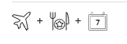Sur la page d'accueil, dans la section "Destinations de rêve!" on trouve des icônes <svg> porteuses d'informations qui n'ont pas d'alternative accessible et qui constituent une perte d'information pour les personnes qui utilisent des technologies d'assistance.
Images porteuses d'information complexe
Certaines images porteuses d'informations sont complexes et nécessitent une description détaillée, pertinente, structurée et adjacente à l'image afin de permettre aux personnes ne percevant pas les images (comme les personnes aveugles), ou ayant des difficultés à les comprendre lorsqu'elles contiennent du texte (personnes ayant des difficultés de lecture, comme les dyslexiques par exemple) d'accéder à l'information.
Il sera possible de masquer cette description et de prévoir un bouton permettant à l'utilisateur de l'afficher si besoin (par exemple : « Afficher la description de l'image »). Voir un exemple de ce mécanisme. Il est également possible de proposer un lien adjacent à l'image vers la description détaillée.
Constats sur le site

Sur la page "Découvrez l'Europe naturellement en train", on trouve en bas de page un carrousel qui contient des images avec des informations complexes dans du texte incrusté, mais qui n'ont pas de description détaillée adjacente.
Images textes
Lorsque des images textes peuvent être reproduites en HTML et CSS, vous ne devez pas utiliser d'images.
Les textes doivent être réalisés en HTML et CSS afin de permettre aux utilisateurs qui en ont besoin d'adapter leur lisibilité (agrandissement des caractères, modification des couleurs, des polices…).
Il est également possible de conserver les images textes et de fournir à l'utilisateur un mécanisme de remplacement qui lui permet, avec un bouton par exemple, de remplacer toutes les images textes en textes stylés.
Constats sur le site
Sur la page "Have a break… anniversary edition", on trouve une image contenant du texte incrusté qu'il est possible de reproduire en HTML et CSS. Dans ce cas présent, il est nécessaire de structurer l'image et son texte en tant qu'image légendée
Cadres
L'absence d'identification des cadres peut poser un problème de repérage dans la structure de la page ou de compréhension des contenus pour les personnes aveugles.
Constats sur le site
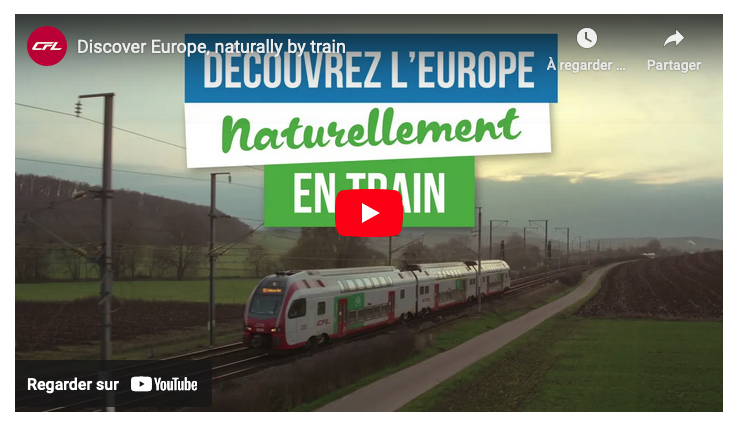Sur la page "Découvrez l'Europe naturellement en train", le titre du cadre de la vidéo ne donne aucune indication sur le type de contenu qui est présent à l'intérieur de celui-ci et le contexte ne permet pas de le savoir non plus.
Couleurs
Recommandation
Ne pas donner l'information uniquement par la couleur et utiliser des contrastes de couleurs suffisamment élevés pour les textes et les composants d'interface.
Contrastes des textes
Plusieurs couleurs présentent un rapport de contraste insuffisant, ce qui peut poser problème aux personnes déficientes visuelles qui ont des difficultés à percevoir les couleurs ou les contrastes.
Rapports de contrastes définis par le RGAA
- Pour les textes qui ont une taille de police calculée inférieure à 24px sans effet de graisse ou une taille de police calculée inférieure à 18,5px avec effet de graisse, le rapport de contraste entre la couleur du texte (y compris le texte en image) et son arrière-plan doit être de 4.5:1, au moins.
- Pour les textes qui ont une taille de police calculée supérieure ou égale à 24px sans effet de graisse ou une taille de police calculée supérieure ou égale à 18,5px avec effet de graisse, le rapport de contraste entre la couleur du texte (y compris le texte en image) et son arrière-plan doit être de 3:1, au moins.
Vous pouvez foncer les couleurs pour obtenir le rapport de contraste exigé.
Si la charte graphique ne peut être modifiée, fournissez une méthode aux utilisateurs pour consulter le site avec des contrastes suffisants. Ceci peut être réalisé simplement avec une fonctionnalité JavaScript et une surcharge CSS des couleurs.
Vous pouvez voir un exemple de ce type de mécanisme sur le site sncf.com. Dans les réglages d'accessibilité, vous trouverez une option qui permet d'afficher le site avec des contrastes renforcés et inversés.
Constats sur le site
-
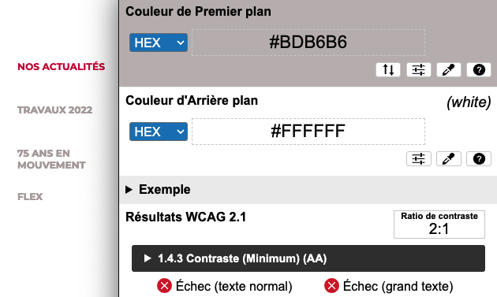
Sur la page d'accueil, les textes des onglets inactifs de couleur grise (#ADA2A2) sur fond blanc (#FFFFFF) ont un ratio 2,5:1 au lieu de 4,5:1. Ces mêmes couleurs sont présentes à plusieurs endroits du site.
-
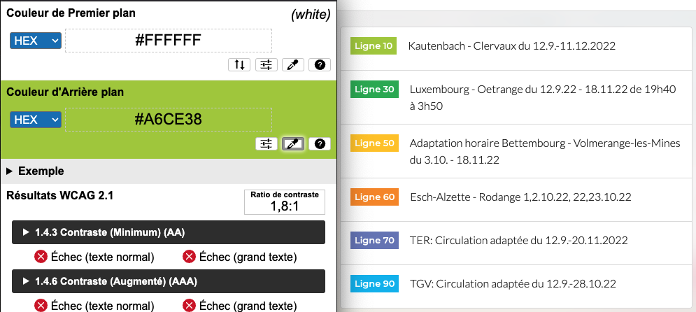
Sur la page d'accueil, dans la fenêtre modale "Travaux et perturbations", les couleurs correspondantes à chaque ligne ont toutes un rapport de contraste insuffisant. Par exemple pour la ligne 10, le texte de couleur blanche (#FFFFFF) sur un fond vert clair (#A6CE38) a un ratio de 1,8:1 au lieu de 4,5:1.
-
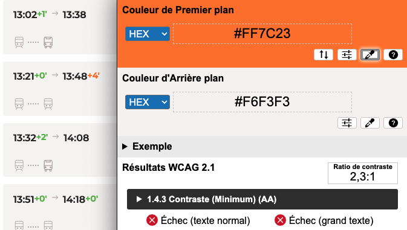
Dans les résultats de recherche horaire, les textes d'indication de retard des trains sont de couleur verte (#55B948) sur fond gris (#F6F4F4) ratio 2,28:1 au lieu de 4,5:1 ou de couleur orange (#FF7C24) sur un fond gris (#F6F4F4) avec un ratio de 2,35:1 au lieu de 4,5:1.
-
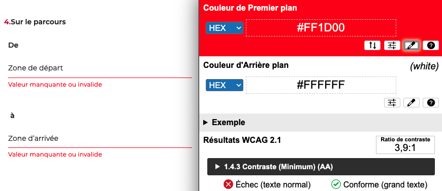
Dans le formulaire de la page "Formuler une réclamation", les textes des messages d'erreur sont de couleur rouge (#FF1D00) sur fond blanc (#FFFFFF) ratio 3,9:1 au lieu de 4,5:1.
-
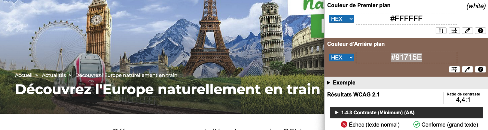
Sur la page "Découvrez l'Europe naturellement en train", les textes présents dans l'en-tête de contenu de couleur blanche #FFFFFF sur une image de fond ont un contraste variable pouvant être insuffisant selon la zone de l'image, par exemple le texte blanc (#FFFFFF) sur un fond (#91715E) ratio 4,4:1 au lieu de 4,5:1 attendu).
Contraste des composants d'interface
Les composants d'interface, les illustrations porteuses d'information ou encore les mises en couleurs porteuses d'information doivent être suffisamment contrastés pour être perçus par les utilisateurs ayant des troubles de perception des couleurs. Par exemple, une icône porteuse d'information devra avoir un rapport de contraste avec la couleur de fond de 3. De même, pour un champ de saisie de formulaire, dont la zone active est matérialisée par sa bordure, alors la couleur de cette bordure devra avoir un rapport de contraste de 3 avec la couleur de fond de la page.
Constats sur le site
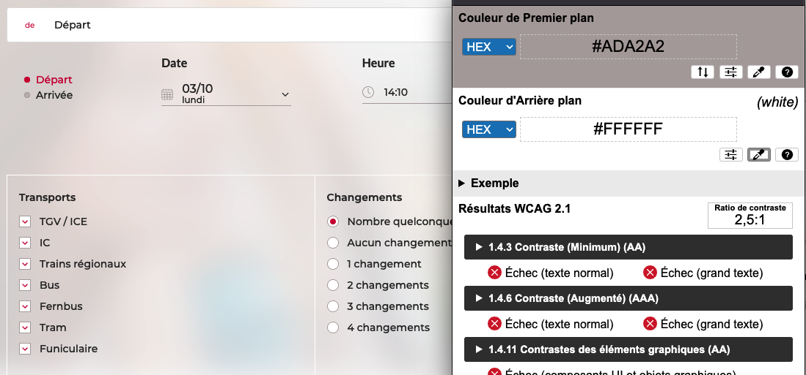Sur la page d'accueil, dans la fenêtre modale "recherche avancée", les cases à cocher, boutons radios, flèches d'action du sélecteur d'heure ont une bordure de couleur grise (#ADA2A2) sur fond blanc (#FFFFFF) et ont un ratio 2,5:1 au lieu de 4,5:1. Ces mêmes couleurs sont présentes sur plusieurs composants formulaires du site.
Information par la couleur
Lorsqu'une information est donnée par la couleur, il faut qu'elle soit également véhiculée par une autre méthode, par exemple par un texte qui donne la même information, pour être perçue par les utilisateurs aveugles.
Il faut également donner un indice visuel autre que la couleur, afin de répondre aux besoins des personnes déficientes visuelles (les daltoniens par exemple). Il peut s'agir d'un symbole, d'une texture, de chiffres.
Constats sur le site
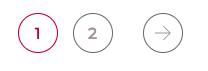Dans la page "conditions légales", sous la liste de résultats de recherche, l'indication de la page courante de la pagination n'est indiquée que par un changement de couleur.
Multimédia
Recommandation
Donner si nécessaire à chaque média temporel une transcription textuelle, des sous-titres synchronisés et une audiodescription synchronisée pertinents. Donner à chaque média non temporel une alternative textuelle pertinente. Rendre possible le contrôle de la consultation de chaque média temporel et non temporel au clavier et s'assurer de leur compatibilité avec les technologies d'assistance.
Identifier les vidéos
Il est nécessaire d'identifier la vidéo et permettre ainsi aux utilisateurs de comprendre quelle est l'information présentée dans ce contenu.
Vous disposez de deux méthodes pour le faire :
- soit faire précéder la vidéo par un titre (solution recommandée) ;
- soit faire suivre la vidéo d'une phrase de légende (paragraphe).
Transcription textuelle
Les vidéos présentes sur le site ne disposent pas de transcription textuelle. Il s'agit d'un impact majeur d'accessibilité. En effet, la transcription textuelle est utile pour différents types d'utilisateurs (aveugles, malvoyants, sourds, malentendants, handicapés moteurs, handicapés cognitifs).
Cette transcription doit être un fichier structuré (docx, HTML) qui reprend toutes les informations présentes (visuelles et sonores) dans la vidéo.
Cette transcription peut être située :
- soit sur la même page que la vidéo ;
- soit ailleurs sur le site. Dans ce cas, ajouter alors un lien vers la transcription sous la vidéo par exemple.
Sous-titres
Chaque vidéo doit disposer de sous-titres synchronisés pertinents, pour permettre aux utilisateurs sourds ou malentendants d'accéder au contenu oralisé de la vidéo.
L'utilisateur doit pouvoir activer ou désactiver les sous-titres depuis le lecteur vidéo. Si ce n'est pas possible, une solution consiste à fournir deux versions de la même vidéo : une version sans sous-titres et une version sous-titrée (On fera ensuite un lien réciproque de l'une vers l'autre).
Audiodescription
Chaque vidéo doit disposer d'une version audiodécrite, si nécessaire. En effet, des textes incrustés ou des actions d'intérêt dans une vidéo ne seront pas perçus par un utilisateur aveugle.
De plus, l'utilisateur doit pouvoir activer ou désactiver l'audiodescription depuis le lecteur vidéo.
Constats sur le site
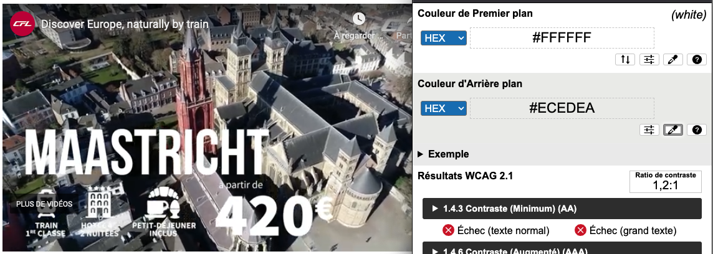Sur la page "Découvrez l'Europe naturellement en train", on trouve un média vidéo qui n'est pas précédé d'un titre ou suivi d'une légende permettant de l'identifier. Cette vidéo n'a pas d'audio et comporte des textes incrustés qui ont parfois un contraste insuffisant. Il est nécessaire pour cette vidéo de fournir une audidescription ainsi qu'une transcription textuelle du contenu de la vidéo.
Liens
Recommandation :
Donner des intitulés de lien explicites, grâce à des informations de contexte notamment, utiliser le titre de lien le moins possible. S'assurer que le nom visible est contenu dans le nom accessible.
Pertinence des intitulés
Un lien possède généralement un intitulé et un contexte. L'intitulé est le texte présent dans la balise <a> (ou la valeur de l'attribut alt de l'image dans le cas d'un lien-image) et le contexte du lien est représenté par le titre qui précède, le titre du lien (l'infobulle) ou tout simplement le texte dans lequel il est inséré.
Pour être considéré comme pertinent, l'intitulé d'un lien doit permettre de comprendre sa destination en prenant en compte son contexte.
Constats sur le site
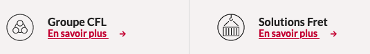À travers le site, on trouve de nombreux liens composites qui contiennent des images <img> ou <svg> qui ne sont pas ignorées des technologies d'assistance.
Scripts
Recommandation :
Donner si nécessaire à chaque script une alternative pertinente. Rendre possible le contrôle de chaque code script au moins par le clavier et la souris et s'assurer de leur compatibilité avec les technologies d'assistance. Identifier les messages de statut lorsque c'est nécessaire.
Utilisation des boutons et des liens
Pour les aveugles et les grands malvoyants qui utilisent un lecteur d'écran, ce manque de distinction claire entre les liens et les boutons peut poser de graves problèmes.
Ainsi, un bouton implémenté sous la forme d'un lien qui déclenche une action de la page, risque de perturber l'utilisateur qui s'attendra au chargement d'une nouvelle page.
De manière générale, les liens devraient être réservés à l'affichage d'une nouvelle page ou la création de liens d'accès rapide dans le contenu. Dans tous les autres cas, l'emploi d'un bouton d'action est plus pertinent.
Enfin, chaque bouton doit avoir un nom accessible défini, soit par l'intermédiaire d'un texte (visible ou positionné hors écran) ou d'une propriété title, aria-label ou aria-labelledby.
Constats sur le site
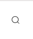Le bouton qui permet d'afficher la fenêtre modale de recherche simple, ainsi que celui qui permet d'afficher la fenêtre modale "travaux et perturbations" n'ont pas de nom accessible. Ils ne sont formés que d'une image <svg> qui n'a pas de rôle image et n'a pas d'alternative.
Utilisation inappropriée de propriétés ARIA
Les propriétés ARIA sont chargées de transmettre des informations indispensables à la restitution et l'utilisation des composants développés avec JavaScript aux technologies d'assistance. Une utilisation inappropriée peut poser des problèmes de restitution notamment.
Constats sur le site
Sur la page "Have a break ... anniversary edition", en affichage desktop en colonne de droite, on trouve un élément qui implémente les principes du motif de conception ARIA Disclosure, mais qui n'est pas fonctionnel: le bouton d'action n'affiche et ne masque pas la zone qui le suit, la zone est toujours visible alors que l'on a un attribut aria-expanded="false". Cela peut poser des soucis de compréhensions aux personnes arrivant sur ce composant qui s'attendent à avoir une zone refermée et à utiliser le bouton d'action pour l'ouvrir.
Éléments interactifs inaccessibles au clavier
Si un élément ne peut pas recevoir le focus ou n'est pas totalement utilisable au clavier, les utilisateurs pour lequel le clavier est le seul moyen de naviguer seront bloqués.
Constats sur le site
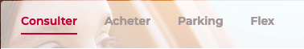Sur la page d'accueil, les systèmes d'onglets ne sont pas accessibles au clavier, il n'est pas possible de passer d'un onglet à l'autre en utilisant les flèches de navigation comme décrit dans le motif de conception ARIA Tabs.
Sur la page d'accueil, le composant de sélection de l'heure n'est pas accessible au clavier, il n'implémente pas les principes du motif de conception ARIA Spinbutton.
Fenêtres modales
Constats sur le site
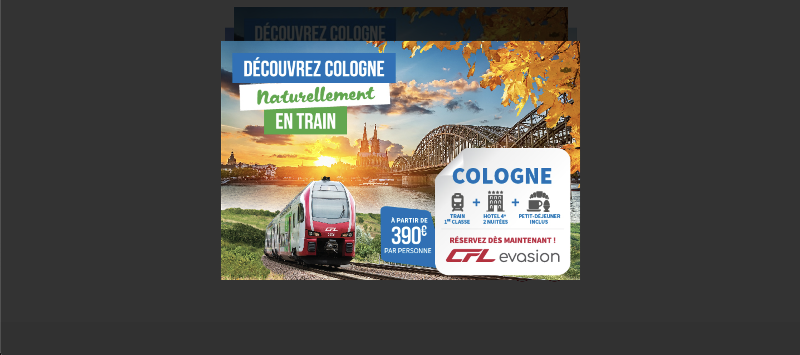Sur la page "Découvrez l'Europe naturellement en train", on trouve des boutons dans les différentes diapositives du carrousel qui ouvrent des fenêtres modales qui n'implémentent pas les principes du motif de conception ARIA Modal.
Carrousel
Sur la page d'accueil du site, on trouve des carrousels qui n'implémentent pas les principes du motif de conception ARIA Carousel.
Gestion de la visibilité de zones
Le site possède des fonctionnalités d'affichage ou de masquage des zones de contenus. L'état affiché/masqué du contenu additionnel doit pouvoir être disponible pour les technologies d'assistance afin que les utilisateurs aveugles accèdent à cet état.
Pour ce type d’élément, l’implémentation du motif ARIA Disclosure est recommandée.
Constats sur le site
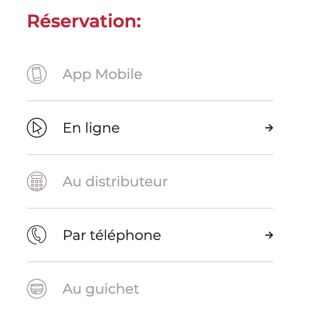Sur la page "Have a break ... anniversary edition", on trouve une section "Réservation" avec une zone de contenu qui s'affiche et se masque qui n'est pas fonctionnelle en affichage "desktop". Celle-ci est bien fonctionnelle et implémente bien les principes du motif de conception ARIA Disclosure en affichage mobile. Le fait que l'implémentation soit présente mais pas fonctionnelle peut poser des soucis aux personnes utilisant des technologies d'assistance comme les lecteurs d'écran.
Autocomplétion
Les champs de saisie qui proposent des listes de résultats au fil de la saisie ne sont pas toujours accessibles aux utilisateurs qui ne perçoivent pas l’écran ou ne le perçoivent pas dans sa totalité. En effet, ils n’ont pas l’information que des résultats sont apparus par exemple, ou encore que la recherche ne retourne aucun résultat.
Constats sur le site
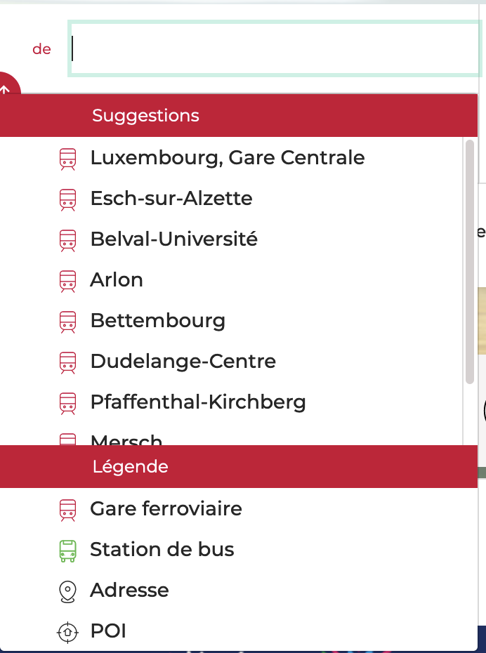Dans les formulaires de recherche d'itinéraires, on trouve des champs de saisie avec autocomplétion qui ne sont pas accessibles, car ils n'implémentent pas le motif de conception ARIA Combobox.
Éléments obligatoires
Recommandation
Vérifier que chaque page web a un code valide selon le type de document, un titre pertinent et une indication de langue par défaut. Vérifier que les balises ne sont pas utilisées uniquement à des fins de présentation, que les changements de langues et de direction de sens de lecture sont indiqués.
Titre de la page
Le titre de la page (visible dans l'onglet du navigateur) est un élément de repère dans le site web. Pour les utilisateurs de lecteurs d'écran (utilisateurs aveugles ou grands malvoyants), c'est le premier élément restitué par le lecteur d'écran au chargement de la page. Cela permet de donner du contexte aux utilisateurs qui n'ont pas une vision globale de la page. C'est l'information à laquelle les utilisateurs avec des troubles de la mémoire accèdent lorsqu'ils naviguent avec l'historique de navigation du navigateur. Il est donc essentiel d'avoir des titres de pages pertinents, concis et très souvent uniques dans le site, et qui reflètent de la position de l'utilisateur dans le site web.
Il est des cas particuliers, comme les pages dont le contenu est une liste de résultats paginés (ex. : les résultats de recherche), pour lesquels le titre doit refléter la nature de la recherche ainsi que le numéro de page en cours de consultation.
Constats sur le site
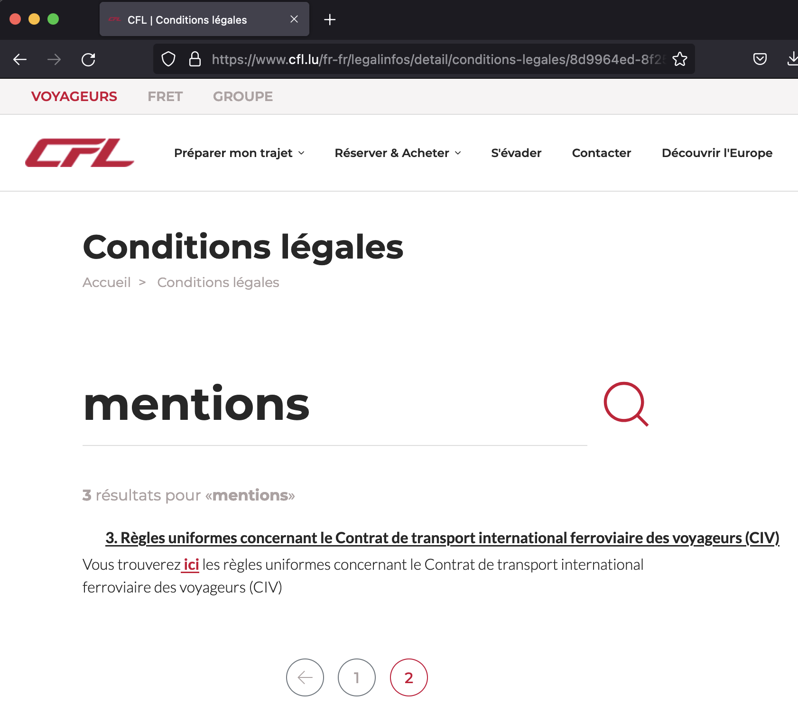Sur la page "Mentions légales", lorsqu'une recherche est effectuée, le titre de la page ne reflète pas les termes recherchés ni la page courante.
Indication de langue
Les lecteurs d'écran utilisent les indications de langue pour vocaliser le contenu dans la langue définie. La page doit contenir une définition de langue principale (généralement sur l'élément html).
Ensuite, les éléments de langue étrangère présents dans le contenu doivent être signalés. Si on trouve dans la page des termes absents du dictionnaire de la langue principale de la page, il faut les identifier afin que le lecteur d'écran les restitue dans la langue appropriée. En effet, une mauvaise prononciation pourrait mener à des incompréhensions pour les utilisateurs qui reposent uniquement sur des restitutions orales. Les noms propres sont exclus de cette obligation.
Constats sur le site
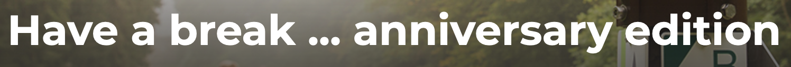Sur la page "Have a break ... anniversary edition" le titre de la page est en anglais, mais cette information n'est pas transmise aux technologies d'assistance car il manque l'attribut lang.
Validité du code
Les technologies d'assistance, comme les lecteurs d'écran ou les systèmes de contrôle à la voix, s'appuient sur le code des pages pour générer les restitutions et les interactions avec l'utilisateur. Un lecteur d'écran va exploiter le code HTML fourni par le navigateur et les informations accessibles au moyen des API d'accessibilité du système.
Si le code comporte des erreurs (balises mal fermées par exemple), il y a un risque que les fonctionnalités du lecteur d'écran soient impactées, comme la navigation de lien en lien par exemple.
Pour vérifier la conformité d'une page, vous pouvez utiliser le validateur mis à disposition par le W3C.
Constats sur le site
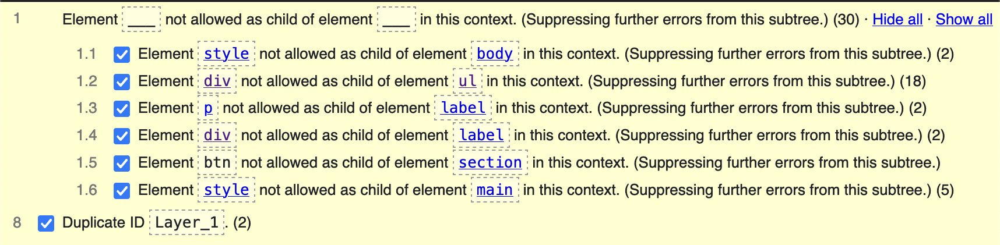Sur la page d'accueil, on trouve de nombreuses erreurs de validité du code, en particulier des identifiants comme "ID Layer_1" dupliqués et de nombreuses erreurs d'imbrication de balises non autorisées comme des balises <div> dans des <ul> ou bien des <p> dans des balises <label>.
Balises utilisées à des fins de présentation
Les éléments de structure HTML ont chacun une sémantique particulière (paragraphe, titre, image, lien, etc.). Si les éléments sont mal employés (détournés de leur utilité première), cela peut poser des problèmes aux utilisateurs qui naviguent à l'aide d'une technologie d'assistance (lecteur d'écran, plug-in…). En effet, les technologies d'assistance disposent de raccourcis permettant de naviguer rapidement entre certains types d'éléments (paragraphes, titres, listes, etc.). Si ces éléments sont mal employés, les utilisateurs ne peuvent pas utiliser ces fonctionnalités de repère et de navigation dans le contenu.
Constats sur le site
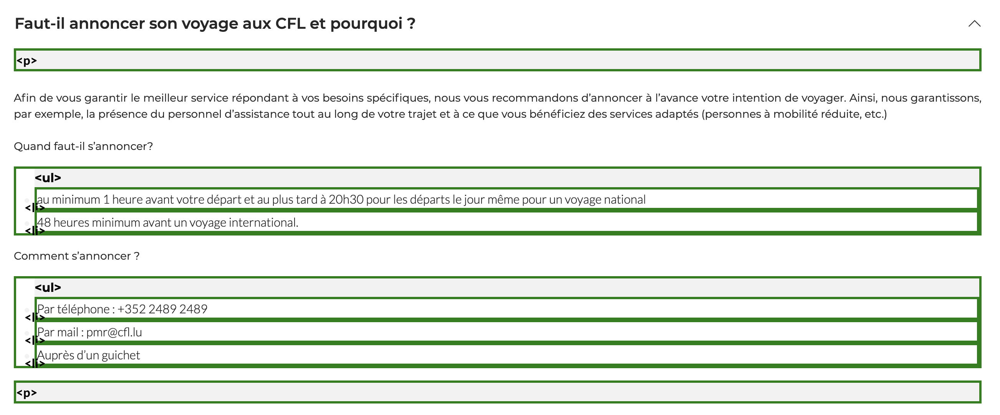Sur la page "Voyager sans barrière", on trouve des balises <p> vides et des textes qui ne sont balisés qu'avec des balises <div>.
Structuration de l'information
Recommandation
Utiliser des titres, des listes, des abréviations et des citations pour structurer l'information. S'assurer que la structure du document est cohérente.
Titres
Le titrage des contenus est une étape importante dans la structuration des contenus. Cela répond à deux besoins :
- identifier rapidement un contenu recherché ;
- naviguer rapidement dans le contenu en se déplaçant de titre en titre.
Un titrage correct fournit à l'utilisateur d'un lecteur d'écran un plan du document et lui permet de naviguer de titre en titre pour se déplacer plus rapidement dans le contenu de la page.
Pour valider la structure de votre page, vous pouvez utiliser l'extension Firefox HeadingsMap. Lorsque l'extension est active, sélectionnez l'onglet « Headings » et vérifiez la cohérence et l'imbrication des titres.
Constats sur le site
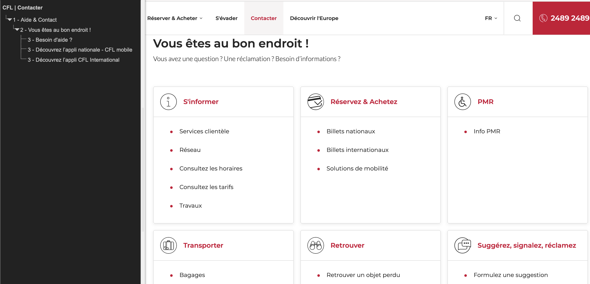Sur la page "Contact", on trouve des textes traités visuellement comme des titres de section qui ne sont pas structurés comme tels.
Listes
La structuration en listes permet aux utilisateurs de lecteurs d'écran de consulter plus rapidement le contenu, grâce à des raccourcis spécifiques, et d'accéder directement à une liste ou de la passer sans avoir à en parcourir tous les items.
Constats sur le site
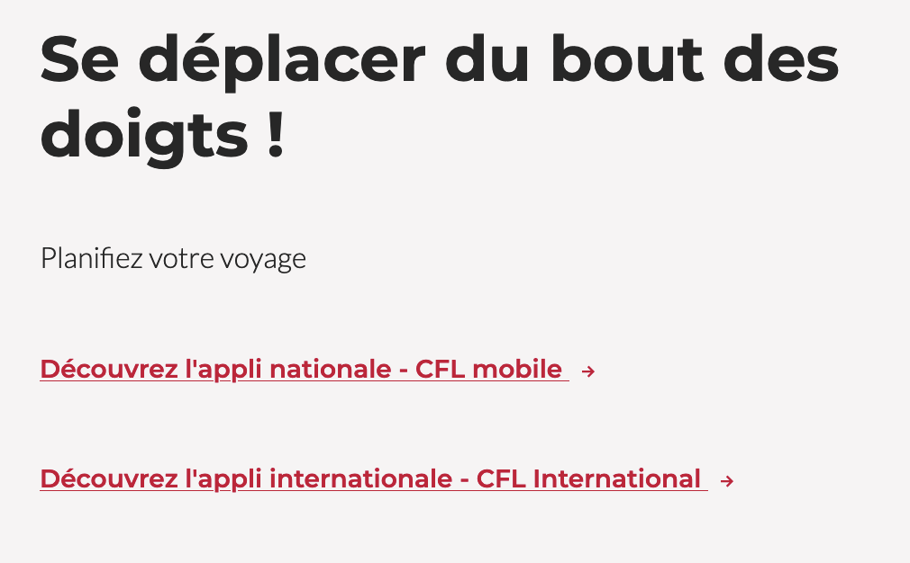Sur la page d'accueil, dans la section "Se déplacer du bout des doigts, on trouve une suite de liens qui n'est pas structurée en liste.
Structure du document
L'utilisation correcte des balises HTML5 et des landmarks ARIA va permettre d'enrichir la restitution pour les utilisateurs aveugles qui ne perçoivent pas les mises en forme : la navigation principale ne sera plus perçue simplement comme une liste de liens, elle sera restituée à l'utilisateur comme un élément de navigation, par l'intermédiaire du lecteur d'écran qui annoncera « région » ou « repère ».
De plus, ces marqueurs sémantiques vont également constituer des éléments de navigation rapide dans la page. Grâce à un raccourci clavier, certains utilisateurs vont pouvoir naviguer plus rapidement entre les régions qui auront été ainsi identifiées.
Constats sur le site
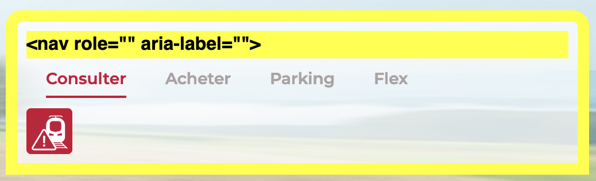Sur la page d'accueil, on trouve une balise <nav> autour du système d'onglets présent en haut de la page. Or ce système d'onglets ne peut être considéré comme un élément de navigation du site. La présence de cette balise <nav> peut compliquer la navigation pour les personnes utilisant des technologies d'assistance.
Présentation de l'information
Recommandation
Utiliser des feuilles de styles pour contrôler la présentation de l'information. Vérifier l'effet de l'agrandissement des tailles des caractères sur la lisibilité. S'assurer que les liens sont correctement identifiables, que la prise de focus est signalée, que l'interlignage est suffisant et donner la possibilité à l'utilisateur de contrôler la justification des textes. S'assurer que les textes cachés sont correctement restitués et que l'information n'est pas donnée uniquement par la forme ou la position d'un élément. S'assurer que les contenus sont lisibles et utilisables dans une fenêtre de largeur réduite. Veiller à ce que l'application de paramètres typographiques n'entraîne pas la perte de contenu ou de fonctionnalité. S'assurer que les contenus qui apparaissent au survol et à la prise de focus puissent être contrôlés par l'utilisateur.
Contenu compréhensible sans les styles : ordre visible vs ordre réel
Un utilisateur aveugle n'a pas accès à la mise en forme qui parfois est porteuse d'informations importantes, notamment des relations entre les éléments.
Il est important de ne pas implémenter les textes dans l'ordre visuel, mais bien dans l'ordre logique de dépendance et hiérarchie des éléments.
Le contenu doit rester compréhensible sans les feuilles de styles (vous pouvez tester vos contenus en désactivant les feuilles de styles).
Constats sur le site
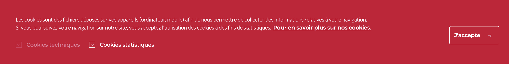À l'arrivée sur le site, le bandeau de cookies devrait être le premier élément sur lequel on a le focus utilisateur, ce qui n'est pas le cas parce que celui-ci est intégré à la fin dans le code HTML.
Liens dont la nature n'est pas évidente
Un lien dont la nature n'est pas évidente est un lien qui peut être confondu avec un texte normal lorsqu'il est signalé uniquement par la couleur par certains utilisateurs ne percevant pas ou mal les couleurs.
Les personnes déficientes visuelles peuvent ignorer ces liens puisque ceux-ci ne sont pas visuellement discernables du reste du texte dans lequel ils sont insérés.
Constats sur le site
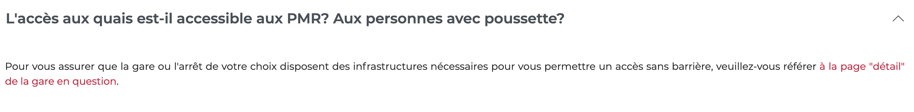Sur la page "Voyager sans barrière", dans la section "L'accès aux quais est-il accessible aux PMR? Aux personnes avec poussette?" le lien "à la page "détail" de la gare en question." est signalé uniquement par la couleur. Celle-ci n'a pas un ratio de contraste suffisant par rapport au texte qui l'entoure (de couleur #cc0033 par rapport au texte environnant #272727) (ratio 2,6:1 au lieu du ratio 3:1 attendu).
Visibilité de la prise de focus
Les personnes avec un handicap moteur qui naviguent au clavier peuvent rencontrer des difficultés considérables à utiliser du contenu si elles ne sont pas en mesure de repérer l'indication visuelle du focus et ses déplacements.
Constats sur le site
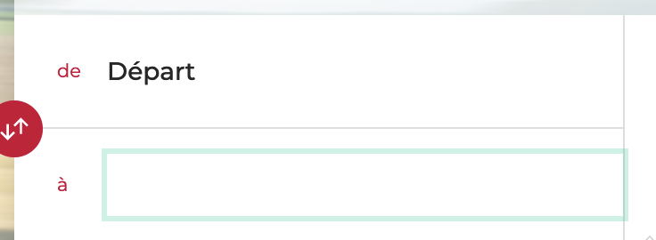Dans les formulaires présents à travers tout le site, les champs de saisie et certains boutons ont soit une indication de focus dont la couleur n'est pas assez visible ou qui est parfois absente.
Information donnée par la forme, la taille ou la position
Les utilisateurs qui ne perçoivent pas la mise en forme (utilisateurs aveugles par exemple) n'auront pas accès aux informations véhiculées par la mise en forme la taille (taille du texte pour signifier un degré d'importance par exemple), ou la position (une consigne indiquant de cliquer en haut à droite par exemple). Il est nécessaire de fournir un équivalent textuel qui permette d'offrir la même information aux utilisateurs aveugles.
Constats sur le site
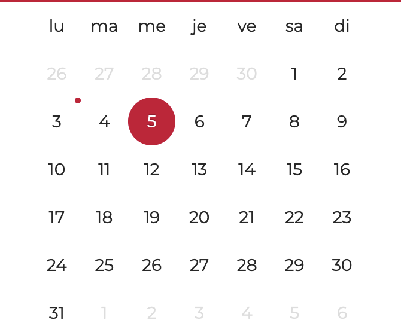Dans les sélécteurs de date (Datepicker) présents dans le site, on trouve deux informations données uniquement par la forme : la date du jour et la date actuellement sélectionnée.
Paramètres typographiques
Les utilisateurs malvoyants et/ou dyslexiques ont souvent recours à des adaptations de la présentation des textes. Pour cela, on doit s'assurer que de tels paramètres ne viennent pas perturber leur lecture sur le site.
Les présentations doivent supporter l'application de paramètres typographiques visant à augmenter les interlignages, interlettrages, les espaces entre les mots et entre les paragraphes. L'application de ces paramètres ne doit pas entraîner la perte de contenus ou de fonctionnalités :
- L'interlignage augmenté de 1,5 fois la taille de la police ;
- L'espacement entre les paragraphes augmenté de 2 fois la taille de la police ;
- L'espacement des lettres augmenté de 0,12 fois la taille de la police ;
- L'espacement des mots augmenté jusqu'à 0,16 fois la taille de la police.
Constats sur le site
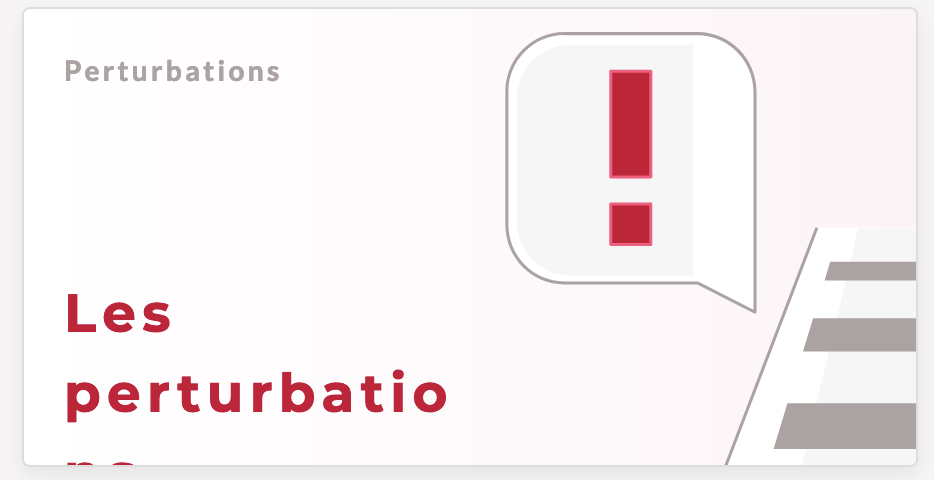Dans le carrousel "Votre parcours au quotidien." présent sur la page d'accueil, on trouve des textes qui sont tronqués (par exemple : "Perturbations") lorsqu'on modifie l'interlettrage de la police.
Formulaires
Recommandation :
Associer pour chaque formulaire chacun de ses champs à son étiquette, grouper les champs dans des blocs d'informations de même nature, regrouper les items de même nature dans les listes de choix, donner à chaque bouton un intitulé explicite. Vérifier la présence d'aide à la saisie, s'assurer que le contrôle de saisie est accessible et que l'utilisateur peut contrôler les données à caractère financier, juridique ou personnel.
Étiquettes et champs
Les champs de formulaires doivent tous posséder des étiquettes correctement reliées.
Une étiquette de champ est un texte situé à proximité du champ de formulaire qui permet de connaître la nature, le type ou le format des informations attendues.
De cette manière, lorsqu'un utilisateur entre dans le champ de saisie avec un lecteur d'écran, le lecteur d'écran lit le contenu de l'étiquette. L'utilisateur comprend alors ce qu'il doit saisir.
Sans cela, même si une étiquette est présente visuellement, l'utilisateur entendra « champ de saisie vide » en entrant dans le champ et ne saura donc pas quoi saisir.
Constats sur le site
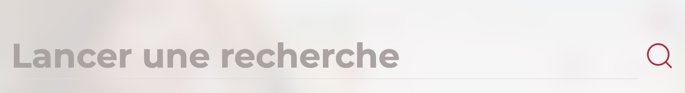Le champ de saisie "rechercher" dans la fenêtre modale affichant la recherche simple n'a pas d'étiquette visible. Il y a bien la présence d'un label, mais il est placé hors écran à destination des lecteurs d'écran. Le placeholder="lancer une recherche" ne peut être considéré comme une étiquette visible valable car il disparait lors de la saisie.
Intitulés de bouton pertinents
Les boutons qui permettent d'interagir avec les formulaires doivent avoir des intitulés pertinents pour que l'utilisateur comprenne l'action du bouton.
Ces intitulés sont essentiels pour les personnes aveugles, afin qu'elles soient sûres de l'action qu'elles s'apprêtent à réaliser.
Constats sur le site
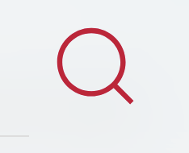Dans la fenêtre modale de recherche simple, on trouve un bouton de soumission du formulaire qui ne contient qu'une image et n'a pas de texte alternatif à destination des technologies d'assistance.
Contrôle de saisie et aide à la saisie
Tous les champs obligatoires doivent être identifiés préalablement à toute validation de l’utilisateur.
Pour les champs qui attendent un format de saisie particulier pour être validés, ce format doit être spécifié à l’utilisateur par un passage de texte visible à proximité du champ. De plus, si l’utilisateur commet une erreur sur ce champ, alors le message d’erreur doit présenter un exemple réel de saisie.
Enfin, les messages d'erreur de saisie des champs de formulaire doivent être liés correctement aux champs en erreur.
Constats sur le site
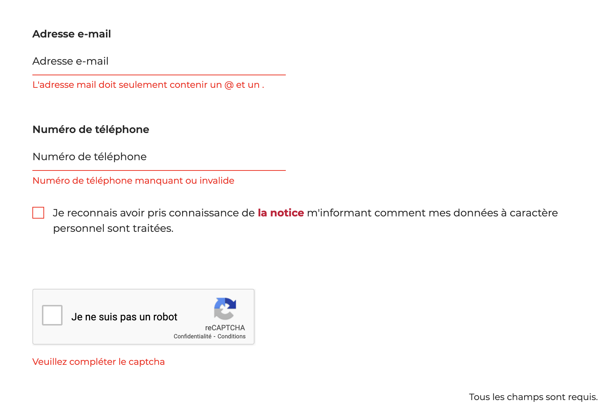Sur le formulaire de réclamation, l'indication que tous les champs sont obligatoires se situe après les champs du formulaire alors qu'elle devrait le précéder afin que les personnes qui le remplissent aient l'information dès le début.
Ce même formulaire contient des champs qui attendent des formats de saisie particuliers : "adresse e-mail" et "numéro de téléphone". Mais ceux-ci ne sont pas accompagnés d'un texte décrivant le format attendu, leurs messages d'erreurs ne sont pas correctement reliés et ne proposent pas d'exemples de saisie réels.
Regroupements de champs et légendes
Les regroupements de champs sont utiles pour ne pas induire certains utilisateurs en erreur, notamment les personnes aveugles.
Les cas typiques de regroupements nécessaires sont les groupes de cases à cocher ou de boutons radio.
Il faut implémenter les champs dans un regroupement lorsque c'est nécessaire et il est obligatoire de définir une légende à ce regroupement.
Constats sur le site
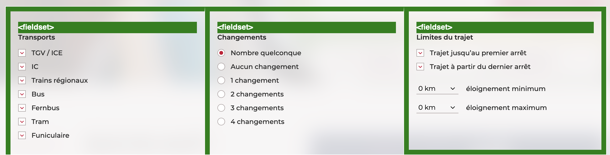Dans la fenêtre modale de recherche avancée, on trouve des regroupements de champs qui n'ont pas de légende associée à ces regroupements.
Identification des données attendues
Certains utilisateurs qui ont des troubles d'accès au langage verbal (paralysie cérébrale, aphasie par exemple) auront des difficultés à accéder au sens des termes écrits. Ainsi, pour leur permettre de remplacer les étiquettes présentes dans les formulaires par des étiquettes (verbales ou imagées) qu'ils connaissent, il est nécessaire d'identifier les champs avec un attribut particulier, de sorte qu'une technologie d'assistance pourra réaliser la personnalisation du formulaire nécessaire à l'utilisateur.
L'identification de ces champs permet également aux utilisateurs d'employer des outils pour remplir automatiquement les champs identifiés avec des valeurs de l'utilisateur.
On ne va rechercher que les champs qui attendent une donnée personnelle. Le RGAA demande d'utiliser l'attribut autocomplete et il fournit l'ensemble des valeurs possibles pour l'attribut.
Constats sur le site
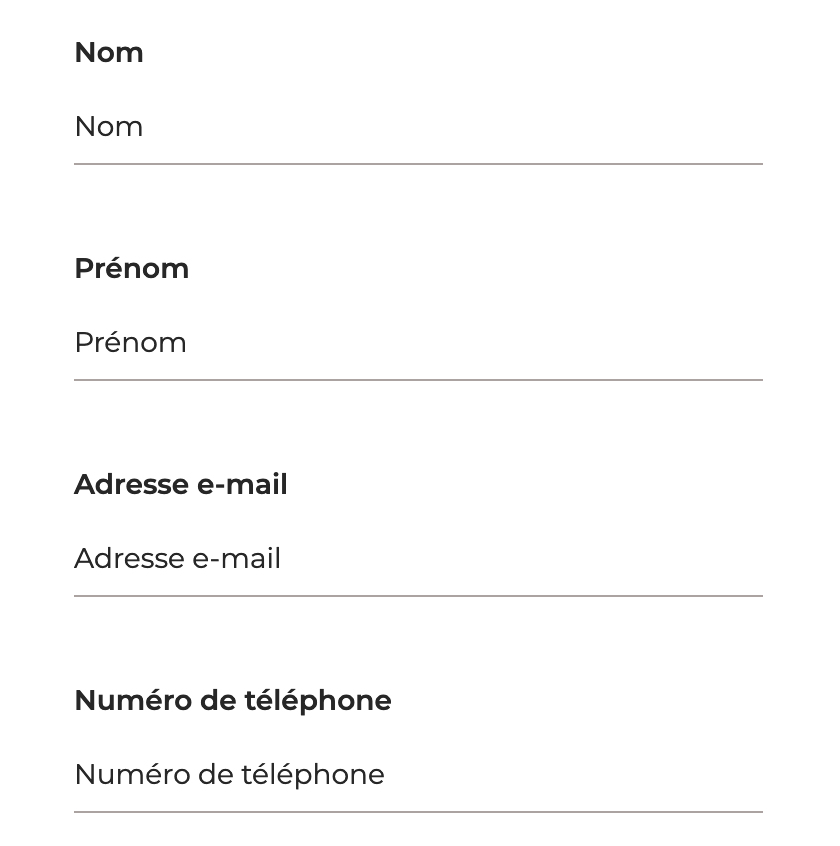Dans le formulaire de demande de réclamation, on trouve des champs correspondant à des données personnelles de l'utilisateur dont la nature n'est pas identifiée et ne facilite pas une saisie par les technologies d'assistance.
Navigation
Recommandation :
Faciliter la navigation dans un ensemble de pages par au moins deux systèmes de navigation différents (menu de navigation, plan du site ou moteur de recherche), un fil d'Ariane et l'indication de la page active dans le menu de navigation. Identifier les groupes de liens importants et la zone de contenu et donner la possibilité de les éviter par des liens de navigation interne. S'assurer que l'ordre de tabulation est cohérent et que la page ne comporte pas de piège au clavier. S'assurer que les raccourcis clavier qui utilisent une seule touche sont contrôlables par l'utilisateur.
Liens d'accès rapide
On note l'absence d'un lien d'accès rapide au contenu au moins. Les liens d'accès rapides sont utiles aux utilisateurs qui naviguent au clavier, mais aussi aux utilisateurs malvoyants qui utilisent une loupe d'écran afin de sauter rapidement les éléments redondants, comme la navigation.
Pour cela, il est préférable que ces liens soient toujours visibles à l'écran. Malgré cela, ces liens peuvent être positionnés hors écran, mais doivent au moins être rendus visibles à la prise de focus.
Il est donc nécessaire d'implémenter au moins un lien d'accès rapide au contenu, qui permet de sauter toute la navigation principale.
Constats sur le site
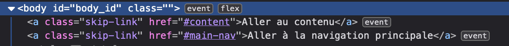Il y a bien des liens d'accès rapides présents sur chacune des pages du site, mais ceux-ci ne sont pas rendus visibles à la prise de focus.
Landmarks ARIA
Pour fournir des points de repère aux utilisateurs aveugles, il faudra également implémenter les landmarks ARIA sur les balises HTML 5 de la page.
Constats sur le site
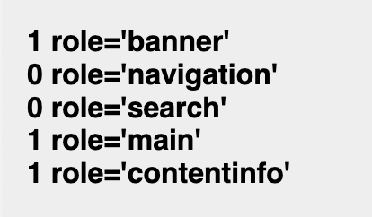Les différents éléments de navigation n'ont pas l'attribut role="navigation" et le champ de recherche principal n'a pas l'attribut role="search" alors qu'il s'agit bien d'un moteur de recherche.
Ordre de tabulation
La navigation dans les contenus peut être considérablement compliquée pour les personnes aveugles ou les personnes handicapées motrices qui naviguent au clavier si l'ordre de tabulation n'est pas cohérent.
L'ordre de tabulation est déterminé par l'ordre des éléments dans le code HTML. Il ne suit pas forcément l'ordre de lecture de la page ou de l'écran, mais il doit être cohérent en fonction de la nature des contenus et des fonctionnalités.
Constats sur le site
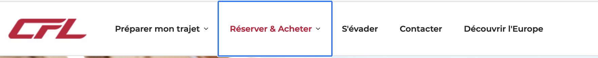Dans le menu principal du site, on peut tabuler dans les sous-menus alors que ceux-ci ne sont pas visibles.
Consultation
Recommandation
Vérifier que l'utilisateur a le contrôle des procédés de rafraîchissement, des changements brusques de luminosité, des ouvertures de nouvelles fenêtres et des contenus en mouvement ou clignotants. Ne pas faire dépendre l'accomplissement d'une tâche d'une limite de temps sauf si elle est essentielle et s'assurer que les données saisies sont récupérées après une interruption de session authentifiée. Proposer des versions accessibles ou rendre accessibles les documents en téléchargement. S'assurer que la consultation n'est pas dépendante de l'orientation de l'écran. Toujours proposer un geste simple en alternative d'un geste complexe permettant de réaliser une action.
Documents en téléchargement
Assurez-vous que chaque document soit accessible (cf. les Guides de créations de documents bureautiques accessibles), ou qu'il dispose d'une alternative accessible proposant le même contenu (par exemple, une version HTML correctement structurée).
Constats sur le site
-
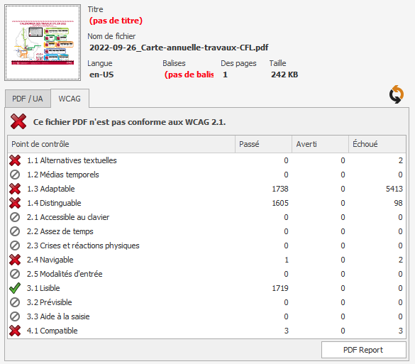
Sur la page "Infos chantiers", le document PDF "Carte des travaux 2022" a des soucis de contrastes et de structure.
-
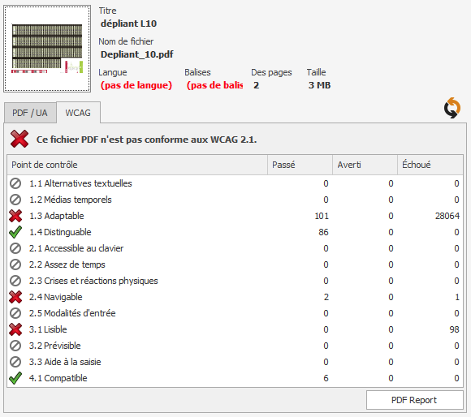
Sur la page "Recherche horaire", on trouve un document PDF "horaires" qui n'est pas accessible, mais qui a une alternative suffisante qui est le moteur de recherche présent sur la même page. Le contenu du document ayant une très grande quantité d'informations, des tests pour vérifier que l'alternative contient le même niveau d'information ont été effectués sur les trains de la ligne 10 entre Luxembourg et Gouvy.
Gestes complexes
Certaines personnes handicapées motrices ne peuvent pas réaliser de gestes complexes, elles utilisent généralement des technologies d'assistance qui leur permettent d'interagir uniquement avec un geste simple comme cliquer sur un bouton par exemple.
Dans ces situations, il est indispensable que le site ou l'application propose pour chaque fonctionnalité basée sur un geste complexe une alternative au moyen d'un geste simple.
Le geste complexe nécessite l'utilisation d'un contact multipoint, comme par exemple, utiliser deux doigts pour zoomer ou dézoomer, ou tracer une trajectoire.
Le geste simple peut être un contact sur un seul point ou toute variation multiple de ce contact (double clic, etc.).
Constats sur le site
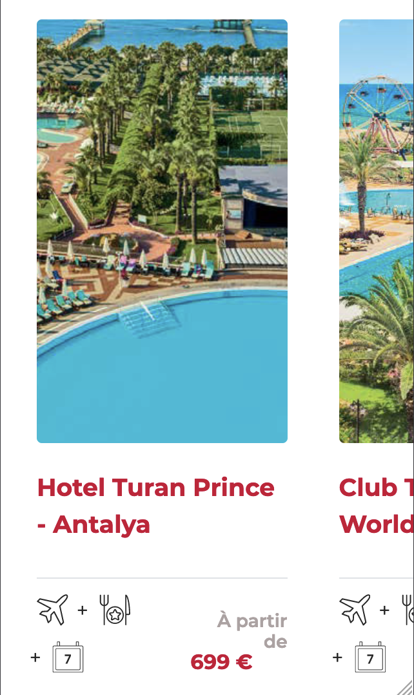Sur la page d'accueil du site, en version mobile ou à fort grossissement, on trouve un carrousel dans la section "Destinations de rêve!" qui ne propose pas d'alternative au geste complexe (glisser).